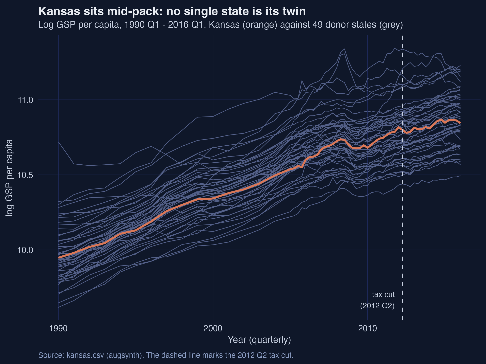
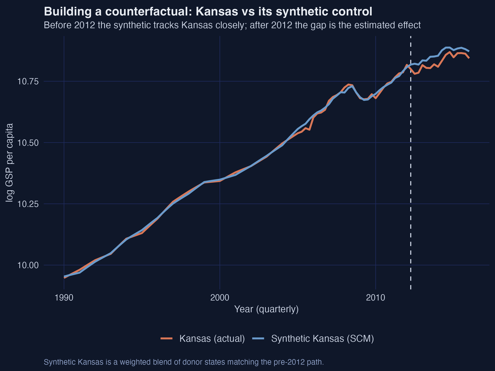
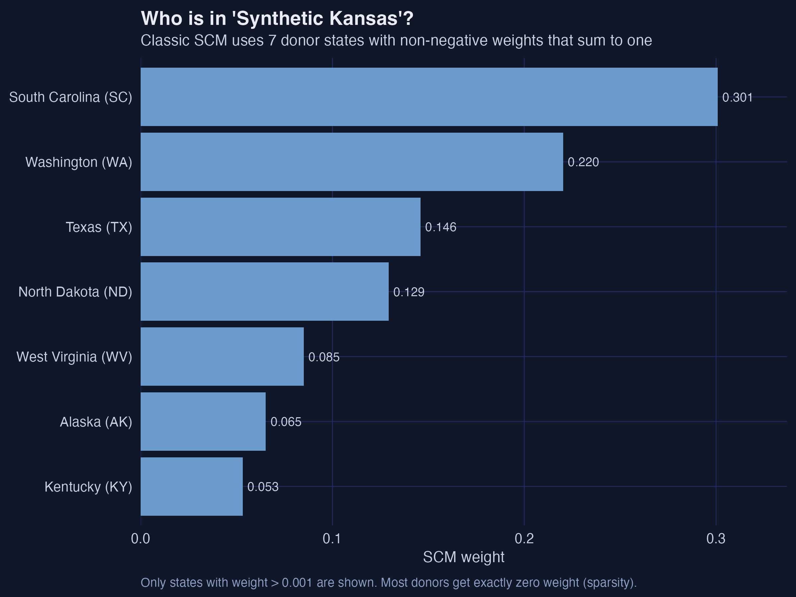
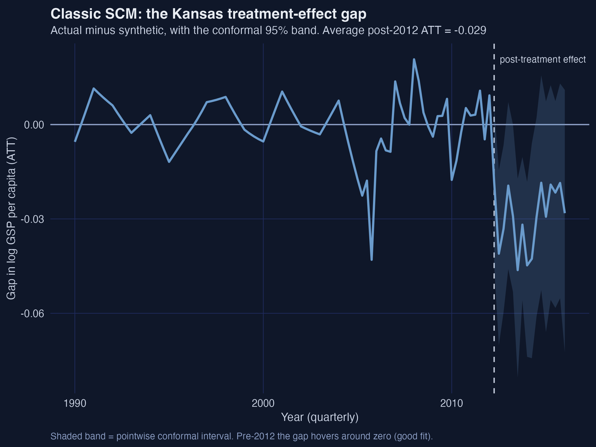
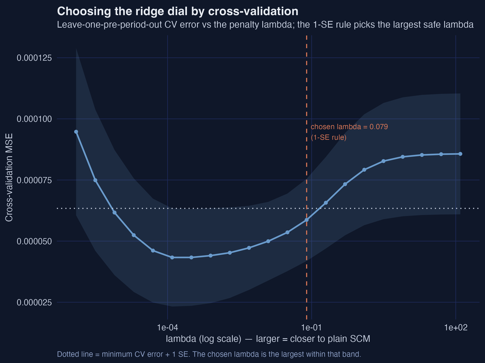
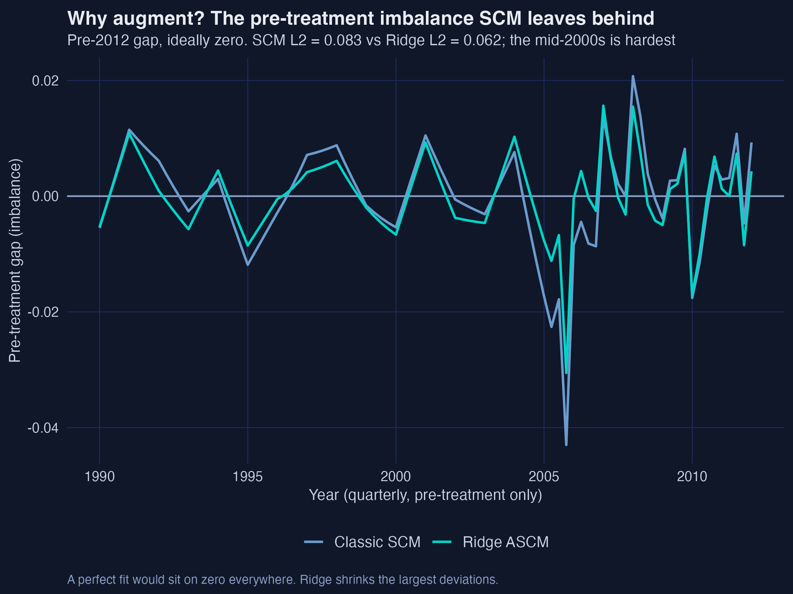
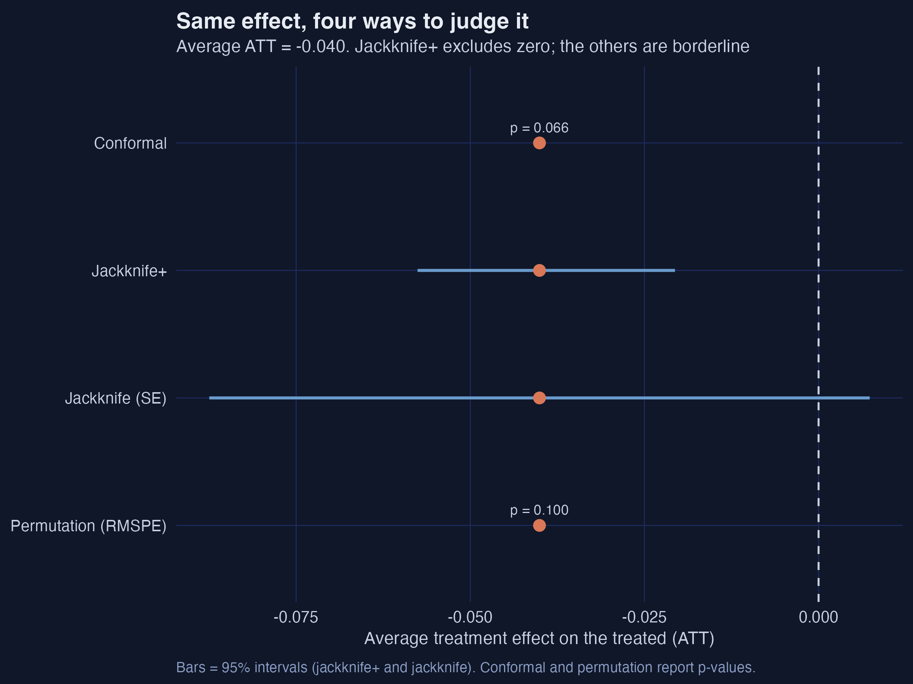

Did the 2012 Kansas tax cut help? A single-unit ASCM tutorial
Nagoya University (GSID)
July 8, 2026
Act I
In May 2012 Kansas enacted one of the largest state tax cuts in U.S. history — Gov. Brownback called it “a real-live experiment” in supply-side growth.
To judge it we need the Kansas that didn’t cut taxes. That Kansas does not exist. Where do we get the counterfactual?

Log GDP per capita, Kansas (orange) vs the 49 donor states (grey), 1990–2016. The dashed line marks the 2012 Q2 tax cut.

Actual Kansas (orange) vs synthetic Kansas (blue): nearly identical before 2012, a widening wedge afterward.
Act II
lngdpcapita, log gross state product per capitaThe 89-quarter pre-period is the engine of inference — long enough to make the conformal and jackknife procedures informative, and to give every donor a credible placebo path.
The estimand is the ATT — Kansas’s actual outcome minus its synthetic, after treatment. SCM picks weights on the simplex (non-negative, summing to one):
\[\hat{\gamma}^{scm} = \arg\min_{\gamma}\ \|X_1 - X_0'\gamma\|_2^2 \quad \text{s.t.} \quad \sum_i \gamma_i = 1,\ \gamma_i \ge 0\]
The two rules — non-negative, sum to one — keep the synthetic interpretable and forbid wild extrapolation. The per-quarter effect is then \(\hat{\tau}_t = Y_{1t} - \sum_i \hat{\gamma}_i^{scm} Y_{it}\).

Donor weights for synthetic Kansas: South Carolina 0.30, Washington 0.22, Texas 0.15, North Dakota 0.13, West Virginia 0.09, Alaska 0.07, Kentucky 0.05.

The classic-SCM gap (actual − synthetic) with its conformal 95% band: near zero before 2012, persistently negative afterward.
−0.043
worst pre-2012 quarter (2005 Q4) — as large as the effect itself, where the true effect is zero
\[\hat{Y}_{1T}^{aug}(0) = \sum_i \hat{\gamma}_i^{scm} Y_{iT} + \Big( \hat{m}_{1T} - \sum_i \hat{\gamma}_i^{scm}\hat{m}_{iT} \Big)\]
Start from the plain SCM counterfactual (first term); add the imbalance the ridge outcome model \(\hat{m}\) predicts (the parenthesis). If the SCM fit were perfect, the correction vanishes — augmentation only acts where there is imbalance to fix.

Cross-validation MSE against the ridge penalty \(\lambda\) (log scale). The chosen \(\lambda = 0.079\) is the largest within one SE of the minimum.
−0.040
Ridge ASCM ATT (≈ −3.9%) · L2 falls 0.083 → 0.062 · estimated bias 0.011 ≈ ⅓ of the effect

Pre-treatment imbalance, SCM vs Ridge ASCM. Ridge shrinks the largest deviations, pulling the 2005 Q4 gap from −0.043 to −0.031.
syn <- augsynth(lngdpcapita ~ treated, fips, year_qtr, kansas,
progfunc = "None", scm = TRUE) # classic SCM
asyn <- augsynth(lngdpcapita ~ treated, fips, year_qtr, kansas,
progfunc = "Ridge", scm = TRUE) # CV picks lambda
summary(asyn) # avg ATT, L2 imbalance, est. bias
plot(asyn) # gap with a conformal 95% band| Specification | ATT (log pts) | ≈ % effect | Pre-fit L2 | Est. bias |
|---|---|---|---|---|
| Classic SCM | −0.029 | −2.9% | 0.083 | — |
| Ridge ASCM | −0.040 | −3.9% | 0.062 | 0.011 |
| Covariate ASCM | −0.061 | −5.9% | 0.054 | 0.027 |
The more we de-bias and balance, the larger the measured damage — the un-augmented SCM number is the conservative one.
Act III
−0.040
Ridge ASCM ATT · strongest in 2013–2014 · robust in sign across all five specifications

Four inference methods side by side. All share the −0.040 estimate; jackknife+ excludes zero, while conformal (p = 0.066), permutation (p = 0.10), and the leave-one-donor jackknife are borderline.
Objection. Augmentation just de-biases the fit; it can’t manufacture identification.
Response. Correct. ASCM disciplines selection; it cannot manufacture identification. The ATT still needs a credible donor blend, no anticipation, no interference — and the gap mixes the tax cut with the drought and aerospace shocks. Suggestive-to-moderate evidence, not a knock-down result.